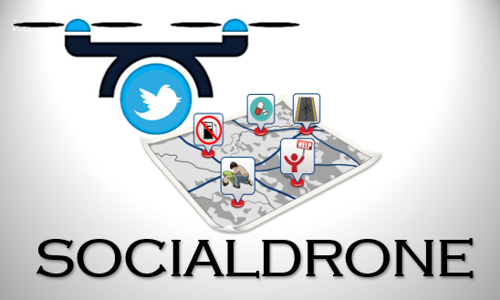
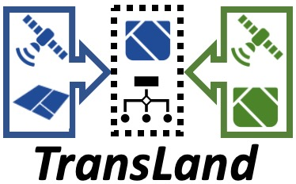
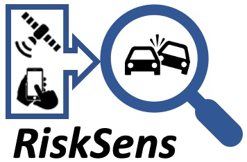
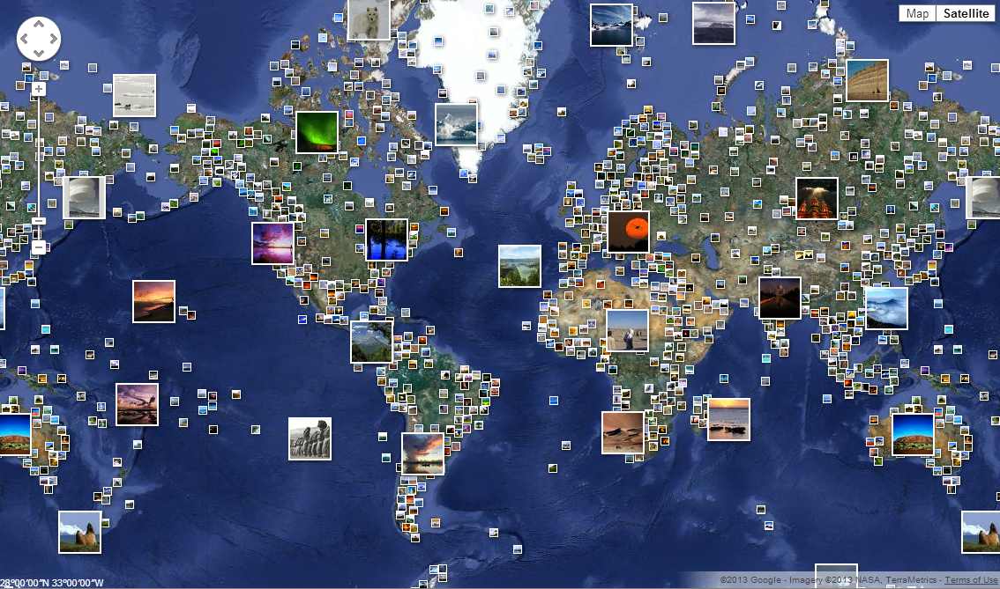
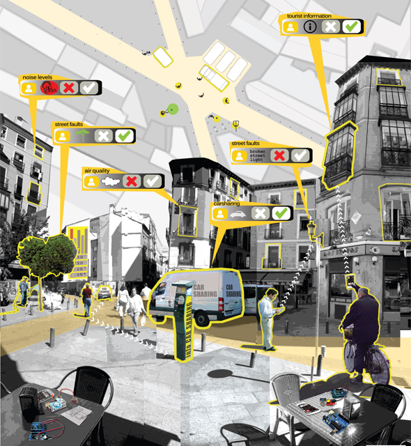
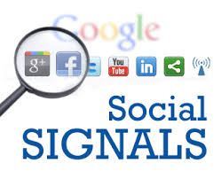

The primary research focus of the lab lies in the emerging area of Social Sensing and Cyber-Physical Systems in Social Spaces, where data are collected from human sources or devices on their behalf. Social sensing systems are one example of information distillation systems in current era of Big Data. We carreid out a set of projects to address several key challenges in social sensing and I beleived the theories, algorithms, frameworks and systems developed in these projects are useful in building future information distillabtion systems in general. An overview of social sensing can be found in IEEE Computer Perspective Paper.
CrowdLearn: A Crowd-AI Hybrid System for Deep Learning-based ApplicationsArtificial Intelligence (AI) has been widely adopted in many important application domains such as speech recognition, computer vision, autonomous driving, and AI for social good. While AI algorithms often significantly reduce the detection time and labor cost in many applications, their performance sometimes falls short of the desired accuracy and is considered to be less reliable than domain experts. To exacerbate the problem, the black-box nature of the AI algorithms also makes it difficult to troubleshoot the system when their performance is unsatisfactory. The emergence of crowdsourcing platforms (e.g., Amazon Mechanic Turk, Waze) brings about the opportunity to incorporate human intelligence into AI algorithms. However, the crowdsourcing platform is also black-box in terms of the uncertain response delay and crowd worker quality. In this project, we develop the CrowdLearn, a crowd-AI hybrid system that leverages the crowdsourcing platform to troubleshoot, tune, and eventually improve the blackbox AI algorithms by welding crowd intelligence with machine intelligence. The system is specifically designed for deep learningbased damage assessment (DDA) applications where the crowd tend to be more accurate but less responsive than machines. The results have been published in IEEE ICDCS 2019 . |
Towards Reliable and Optimized Crowdsensing based Cyber-Physical Systems (C-CPS)This project is motivated by the challenges in data and predictive analytics and in control for participatory science data collection and curation (known as crowdsensing) in cyber-physical systems (CPS). This project focuses on data-driven frameworks to address these challenges in CPS-enabled participatory science that builds on statistics, optimization, control, and natural language processing. Our framework tightly combines the underlying methods and techniques, especially focusing on physical sensors, mobility, and model-based approaches, to improve efficiency, effectiveness, and accountability. This project also closely integrates education and training with foundational research and public outreach that enhances interdisciplinary thinking about CPS systems, engages the public through participatory science, and broadens participation in science, technology, engineering, mathematics, and computer science. |
SocialDrone: An Integrated Social Media and Drone Sensing System for Reliable Disaster ResponseSocial media sensing has emerged as a new disaster response application paradigm to collect real-time observations from online social media users about the disaster status. Due to the noisy nature of social media data, the task of identifying trustworthy information (referred to as "truth discovery") has been a crucial task in social media sensing. In this project, we develop SocialDrone, a novel closed-loop social-physical active sensing framework that integrates social media and unmanned aerial vehicles (UAVs) for reliable disaster response applications. In SocialDrone, signals emitted from the social media are distilled to drive the drones to target areas to verify the emergency events. The verification results are then taken back to improve the sensing and distillation process on social media. The SocialDrone framework introduces several unique challenges: i) how to drive the drones using the unreliable social media signals? ii) How to ensure the system is adaptive to the high dynamics from both the physical world and social media? iii) How to incorporate real-world constraints (e.g., the deadlines of events, limited number of drones) into the framework? The SocialDrone addresses these challenges by building a novel integrated social-physical sensing system that leverages techniques from game theory, constrained optimization, and reinforcement learning. The results have been published in IEEE Infocom 2020 . |
|  |
FauxBuster: A Content-Agnostic Fauxtography Detector using Social Media CommentsWith the increasing popularity of online social media (e.g., Facebook, Twitter, Reddit), the detection of misleading content on social media has become a critical undertaking. This paper focuses on an important but largely unsolved problem: detecting fauxtography (i.e., social media posts with misleading images). We found that the existing literature falls short in solving this problem. In particular, current solutions either focus on the detection of fake images or misinformed texts of a social media post. However, they cannot solve our problem because the detection of fauxtography depends not only on the truthfulness of the images and the texts but also on the information they deliver together on the posts. In this project, we develop the FauxBuster, an end-to-end supervised learning system that can effectively track down fauxtography by exploring the valuable clues from user's comments of a post on social media. The FauxBuster is content-agnostic in that it does not rely on the analysis of the actual content of the images, and hence is robust against malicious uploaders who can intentionally modify the presentation and description of the images. We evaluate FauxBuster on two mainstream social media platforms - Reddit and Twitter. Results show that FauxBuster is both effective and efficient in addressing the fauxtography problem. The results have been published in IEEE BigData 2018 , Springer SNAM 20 . |
VisualPoet: Classical Poetry Recommendation with Visual Input on Social MediaWith the increasing popularity of portable devices with cameras (e.g., smartphones and tablets) and ubiquitous Internet connectivity, travelers can share their instant experience during the travel by posting photos they took to social media platforms. In this project, we develop a new image-driven poetry recommender system that takes a traveler's photo as input and recommends classical poems that can enrich the photo with aesthetically pleasing quotes from the poems. Three critical challenges exist to solve this new problem: i) how to extract the implicit artistic conception embedded in both poems and images? ii) How to identify the salient objects in the image without knowing the creator's intent? iii) How to accommodate the diverse user perceptions of the image and make a diversified poetry recommendation? The VisualPoet system jointly addresses the above challenges by developing heterogeneous information network and neural embedding techniques. Evaluation results from real-world datasets and a user study demonstrate that our system can recommend highly relevant classical poems for a given photo and receive significantly higher user ratings compared to the state-of-the-art solutions. The results have been published in ACM/IEEE ASONAM 2019 . |
TransLand: An Adversarial Transfer Learning Framework for Migratable Urban Land Usage ClassificationUrban land usage classification is a critical task in big data based smart city applications that aim to understand the social-economic land functions and physical land attributes in urban environments. This project focuses on a migratable urban land usage classification problem using remote sensing data (i.e., satellite images). Our goal is to accurately classify the land usage of locations in a target city where the ground truth land usage data is not available by leveraging a classification model from a source city where such data is available. This problem is motivated by the limitation of current solutions that primarily rely on a rich set of ground-truth data for accurate model training, which encounters high annotation costs. In this project, we develop TransLand, an adversarial transfer learning framework to translate the satellite images from the target city to the source city for accurate land usage classification. We evaluated our framework on the real-world satellite imagery and land usage datasets collected from different cities in Europe. The results show that TransLand significantly outperforms the state-of-the-art land usage classification baselines in classifying the land usage of locations in a city. The results have been published in IEEE BigData 2019 . |
|  |
EdgeBatch: Towards AI-empowered Intelligent Edge SystemsWModern Internet of Things (IoT) systems are increasingly leveraging deep neural networks (DNNs) with the goal of enabling intelligence at the edge of the network. While applying DNNs can greatly improve the accuracy of autonomous decisions and inferences, a significant challenge is that DNNs are traditionally designed and developed for advanced hardware (e.g., GPU clusters) and can not easily meet the real time requirements when deployed in a resource-constrained edge computing environment. While many systems have been proposed to facilitate deep learning at the edge, a key limitation lies in the under-utilization of the parallelizable GPU resources of edge nodes (e.g., IoT devices). In this project, we develop EdgeBatch, a collaborative intelligent edge computing framework that minimizes the delay and energy consumption of executing DNN tasks at the edge by sharing idle GPU resources among privately owned IoT devices. We implemented EdgeBatch on a real-world edge computing testbed that consists of heterogeneous IoT devices. The results show that EdgeBatch achieved significant performance gains in terms of both the end-to-end delay and energy savings compared to the state-of-the-art solutions. The results have been published in IEEE RTSS 2019 , IEEE Infocom 2019 . |
 |
StreamGuard: A Social Sensing Approach to Detecing the Copyright Infringement in Live Video Sharing Platforms
Copyright infringement detection is a critical problem in large-scale online video sharing systems: the copyright-infringing videos must be correctly identified and removed from the system to protect the copyright of the content owners. This project focuses on a challenging problem of detecting copyright infringement in live video streams. The problem is particularly difficult because i) streamers can be sophisticated and modify the title or tweak the presentation of the video to bypass the detection system; ii) legal videos and copyright-infringing ones may have very similar visual content and descriptions. We found current commercial copyright detection systems did not address this problem well: a large amount of copyrighted content bypasses the detection system while legal streams are taken down by mistake. In this project, we develop the StreamGuard, a online video copyright infringement detection system that addresses the above challenges by leveraging live chat messages from the audience. We evaluated our system on real-world live video streams collected from YouTube. The results show that StreamGuard is effective and efficient in identifying the copyright-infringing videos. The results have been published in IEEE BigData 2018 , ACM/ASONAM 2018.
RiskSens: A Multi-view Learning Approach to Identifying Urban Traffic Risk using Social and Remote SensingWith the ever-increasing number of road traffic accidents worldwide, the road traffic safety has become a critical problem in intelligent transportation systems. A key step towards improving the road traffic safety is to identify the locations where severe traffic accidents happen with a high probability so the precautions can be applied effectively. We refer to this problem as risky traffic location identification. While previous efforts have been made to address similar problems, two important limitations exist: i) data availability: many cities (especially in developing countries) do not maintain a publicly accessible database for the traffic accident records in a city, which makes it difficult to accurately estimate the accidents in the city; ii) location accuracy: many self-reported traffic accidents (e.g., social media posts from common citizens) are not associated with the exact GPS locations due to the privacy concerns. To address these limitations, this project develops the RiskSens, a multi-view learning approach to identifying the risky traffic locations in a city by jointly exploring the social and remote sensing data. We evaluated RiskSens using real world datasets from large cities. The evaluation results show that RiskSens significantly outperforms the state-of-the-art baselines in identifying risky traffic locations in a city. The results have been published in IEEE BigData 2018 , ACM/IEEE ASONAM 2019 , IEEE DCoSS 2019 . |
|  |
When Social Sensing meets Edge ComputingA key limitation in the current social sensing solution space is that data processing and analytic tasks are often done on a "backend" system (e.g., on dedicated servers or commercial clouds). Unfortunately, this scheme ignores the rich processing capability of increasingly powerful edge devices owned by individuals (e.g., mobile phones, tablets, smart wearables, and the Internet of Things). The advent of edge computing pushes the frontier of computation, service, and data along the cloud-to-things continuum to the edge of the network, and brings new opportunities for social sensing applications. By combining social sensing with edge computing, the privately owned edge devices not only serve as pervasive sensors, but also form a federation of computational nodes where the data collected from them can be processed and consumed at the edge. We refer to the marriage of social sensing and edge computing as Social Sensing based Edge Computing paradigm (SSEC). In this project, we investigate several fundamental challenges in SSEC such as resource management, incentives design, robustness. The results have been published in IEEE RTAS 2018 , ACM SEC 2018 , IEEE ICCCN 2019. |
Scalable, Dynamic and Constraint-Aware Social Sensing SystemWhile significant progress has been made to build reliable social sensing system, some important challenges have not been well addressed yet. First, existing social sensing systems did not fully solve the dynamic truth estimation problem where the ground truth of claims changes over time. Second, many current solutions are not scalable to large-scale social sensing events because of the centralized nature of their data analytics algorithms. Third, the transition of true values of measured variables is constrained by some physical rules that must be followed to ensure correct estimation. In this project, we developed a scalable streaming social sensing system with explicit considerations of the physical constraints on the measured variables to address the above challenges. We evaluated our framework through real world social sensing applications. The evaluation results show that our system is scalable and outperforms the state-of-the-art solutions in terms of both effectiveness and efficiency. The results have been published in IEEE ICDCS 2017 , IEEE BigData 2017, IEEE Transanction on Big Data. |
From Big Data to Small Data: Taming the two V's of Veracity and VarietyData of questionable quality has led to significantly negative economic and social impacts on organizations, leading to overrun in costs, lost revenue, and decreased efficiencies. The issues on data reliability, credibility, and provenance has become even more daunting when dealing with the variety of data, especially data that are not directly collected by an organization, but from the third-party sources such as social media, data brokers, and crowdsourcing. To address such issues, this project aims to develop a Data Valuation Engine (DVE) that solves the critical problem of data reliability, credibility and provenance, and provides accountability and quality processes right from data acquisition. The DVE leverages and innovates techniques in estimation theory, data fusion and machine learning to fill a critical gap in data accountability and quality, thereby providing a transformative step in countering the ubiquitous data quality issues found in almost every application domain from business to environment to health to national security. The DVE will be integrated in the Hadoop ecosystem and will be agnostic to the data source, application or analytics, and provided as a hosted solution to the community. The results have been published in IEEE BigData 16 , ACM Recsys 16 , IEEE Transanction on Big Data. |
Location-based Social Sensor ProfilingWhile many social sensing studies focus on sensing and recovering the status of the physical world, this project investigates the problem of profiling the social sensors (i.e., humans). In particular, we study the problem of accurately inferring the localness and the home locations of people from the noisy and sparse social sensing data they contribute. In this study, we propose a new method to accurately infer the home locations of people by explicitly exploring the localness of people and the dependency between people based on their check-in behaviors under a rigorous analytical framework. We perform extensive experiments to evaluate the performance of our scheme and compared it to the state-of-the-art techniques using three real world data traces collected from Foursquare. The results showed the effectiveness of our scheme in accurately profiling the home locations of people. The results have been published in IEEE ASONAM 16 , IEEE BigData 17 , IEEE INFOCOM 17 , IEEE ASONAM 17 . |
Social-aware Interesting Place FindingThis project studies an interesting place finding problem in social sensing, in which the goal is to correctly identify the interesting places in a city (e.g., parks, museums, historic sites, scenic trails, etc.). Important challenges exist in solving this problem: (i) the interestingness of a place is not only related to the number of users who visit it, but also depends upon the travel experience of the visiting users; (ii) the user's social connections could directly affect their visiting behavior and the interestingness judgment of a given place. In this project, we develop a new Social-aware Interesting Place Finding framework that addresses the above challenges by explicitly incorporating both the user's travel experience and social relationship into a rigorous analytical framework. Our framework can find interesting places not typically identified by traditional travel websites (e.g., TripAdvisor, Expedia). We valid the effectiveness of our framework through real-world datasets collected from location-based social network services. The results have been published in IEEE Smart City 15 , IEEE DCoSS 16 , Elsevier KBS . |
|  |
Who to Choose: Source/Sensor Selection in Social SensingThis project investigates a new problem of critical source selection in social sensing applications. The goal of this problem is to identify a subset of critical sources that can help effectively reduce the computational complexity of the information distillation problem and improve the accuracy of the analysis results. In this project, we propose a new scheme, Critical Source Selection (CSS), to find the critical set of sources by explicitly exploring both dependency and speak rate of sources. We evaluated the performance of our scheme and compared it to the state-of-the-art baselines using data traces collected from a real world social sensing application. The results showed that our scheme significantly outperforms the baselines by finding more truthful information at a higher speed. The results have been published in IEEE DCoSS 17 , Elsevier KBS . |
Truth Discovery in Social SensingThis project solves a fundamental problem in information distillation in social sensing where data are collected from human sources or devices in their possession: how to ascertain the credibility of information and estimate reliability of sources, as the information sources are usually unvetted and potentially unreliable. We call this problem truth discovery. Current research in data mining and machine learning (e.g., fact-finding) solves similar problems with important limitations on analysis semantics and suboptimal solutions. In contrast, our research presented, for the first time, an optimal truth discovery framework and system that provides accurate and quantifiable conclusions on both information credibility and source reliability without prior knowledge on either. Our work provides a new generic foundation for distilling reliable and quantifiable information from unreliable sources (e.g., humans). The results have been published in Fusion 11 , ACM/IEEE IPSN 12 , ACM ToSN , IEEE SECON 15, ICWSM 16 , IEEE DCoSS 16, IEEE MASS 17 . |
|  |
Quality of Information (QoI) Assurance in Social SensingThis project investigates another critical problem in social sensing: how to accurately assess the quality of the truth discovery results by quantifying estimation errors and providing confidence bounds. This guaranteed quality analysis is immensely important in any practical settings where errors have consequences. However, this is largely missing in current literature. We successfully derived the first performance bound that is able to accurately predict the estimation errors of the truth discovery results. Our work allows real world applications to assess the quality of data obtained from unreliable sources to a desired confidence level, in the absence of independent means to verify the data and in the absence of prior knowledge of reliability of sources. Our work was mentioned explicitly in the National Academies Press as a "good example of Army's cross-genre research" in 2013. The research results have been published in DMSN 11 , IEEE SECON 12 , IEEE JSAC . |
Link Analysis across Multi-genre NetworksSocial sensing data is generated through the complicated interactions of information, social and physical networks. The interdisciplinary network systems are so complex that link analysis across multi-genre networks is essential. However, link analysis taking into account the three networks altogether is rare in current research. In this project, we generalized the truth discovery framework to jointly analyze links across multi-genre networks and developed a new information distillation system, called Apollo. Apollo has been continuously tested through real world case studies using large-scale datasets collected from open source media and smart road applications. The results showed good correspondence between observations deemed correct by Apollo and ground truth, demonstrating the power of using link analysis across multi-genre networks for efficient information distillation. The results have been published in IEEE RTSS 13 , Journal of Real-time Systems . |
 |
Using Humans as Sensors: The Uncertain Data Provenance ChallengeThe explosive growth in social network content suggests that the largest "sensor network" yet might be human . Extending the social sensing model, this project explores the prospect of utilizing social networks as sensor networks, which gives rise to an interesting reliable sensing problem. From a networked sensing standpoint, what makes this sensing problem formulation different is that, in the case of human participants, not only is the reliability of sources usually unknown but also the original data provenance may be uncertain. Individuals may report observations made by others as their own. The contribution of this project lies in developing a model that considers the impact of such information sharing on the analytical foundations of reliable sensing, and embed it into our tool Apollo that uses Twitter as a "sensor network" for observing events in the physical world. Evaluation, using Twitter-based case-studies, shows good correspondence between observations deemed correct by Apollo and ground truth. The results have been published in ACM/IEEE IPSN 14 , ACM/IEEE IPSN 16. |
Provenance-assisted Classification in Social NetworksSignal feature extraction and classification are two common tasks in the signal processing literature. This project investigates the use of source identities as a common mechanism for enhancing the classification accuracy of social signals . We define social signals as outputs, such as microblog entries, geotags, or uploaded images, contributed by users in a social network. While the design of such classifiers is application-specific, social signals share in common one key property: they are augmented by the explicit identity of the source. This motivates investigating whether or not knowing the source of each signal allows the classification accuracy to be improved. We call it provenance-assisted classification. This project answers the above question affirmatively, demonstrating how source identities can improve classification accuracy, and derives confidence bounds to quantify the accuracy of results. Evaluation is performed in two real-world contexts: (i) fact-finding that classifies microblog entries into true and false, and (ii) language classification of tweets issued by a set of possibly multi-lingual speakers. The results show that provenance features significantly improve classification accuracy of social signals. This observation offers a general mechanism for enhancing classification results in social networks. The results of this work are going to appear in IEEE J-STSP 14 . |
|  |